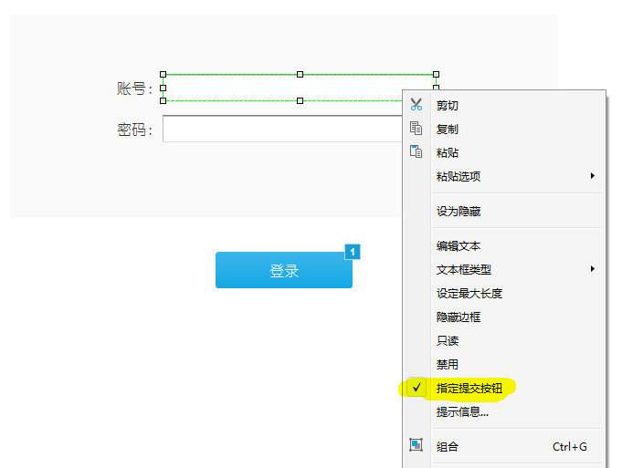
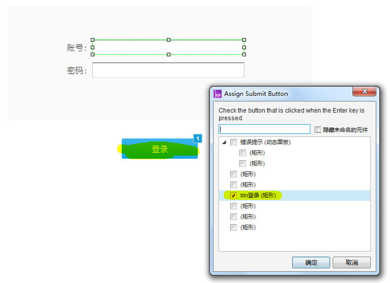
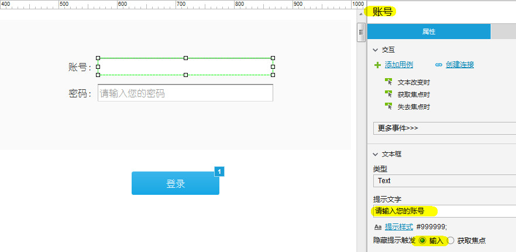
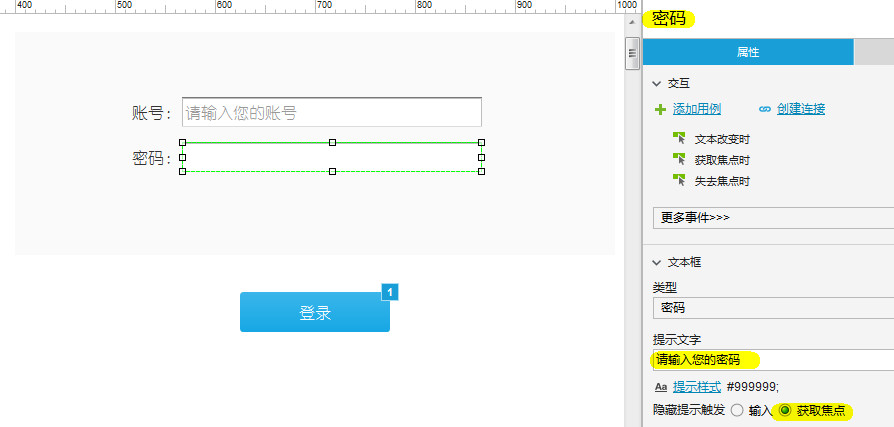
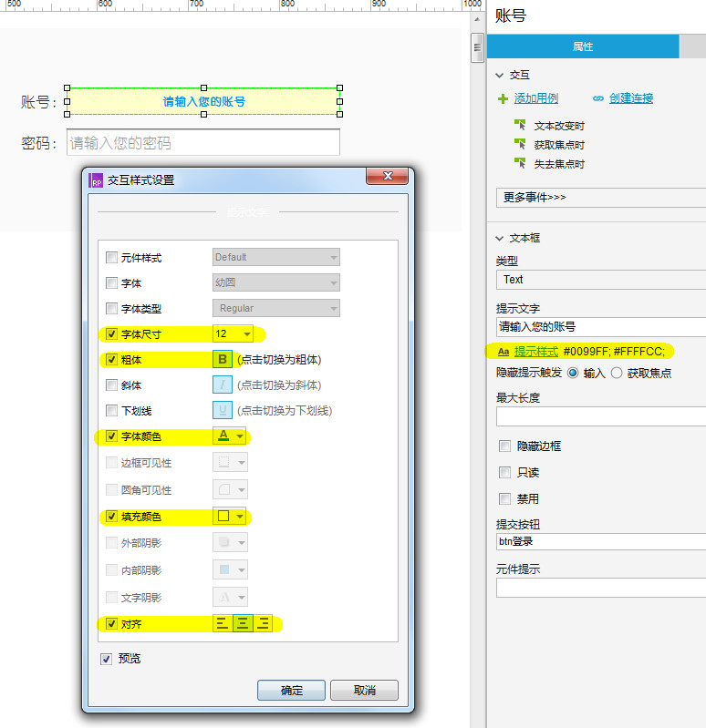

我们提交表单时，经过通过按ENTER回车键来触发，如输入账号密码后按ENTER登录，输入检索条件后按ENTER检索等，这里说的就是如何不通过点击登录/检索按钮，只需按ENTER即可实现和点击登录/检索按钮一样的效果。
实现方法很简单，只需要为文本框指定提交按钮即可，指定的提交按钮即登录按钮，如下图：
 输入框提示文字功能,即：点击文本框，提示文字消失，放弃输入时，提示文字复现；
两种触发方式设置方法很简单，请看下图：
通过输入触发：  通过获取焦点触发：  还可以设置提示的样式： 